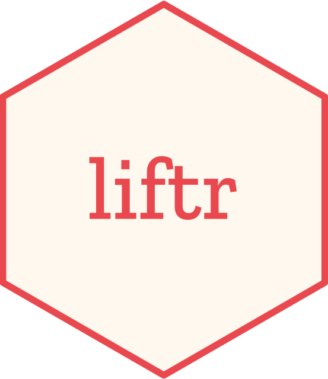

Changelog
Source:NEWS.md
liftr 0.9.1 (2019-06-18)
Bug Fixes
- Fixed the issue of parsing Bioconductor package names (#45) for R >= 3.5 and the introduction of BiocManager. We thank Tiago Lubiana for contributing the patch.
liftr 0.9 (2018-05-13)
CRAN release: 2018-05-14
Improvements
- Added a new argument
dry_runinrender_docker()for debugging: when set toTRUE, it will only return the Docker commands and not actually run them. - New URL for the documentation website: https://nanx.me/liftr/.
liftr 0.8 (2017-12-12)
CRAN release: 2017-12-13
New Features
- Added a new argument
pruneinrender_docker()to automatically clean up dangling containers and images in case the image build or compilation was not successful (#27). We thank Nicolas Roelandt for suggesting this feature (#25). - Added functions
prune_container_auto(),prune_image_auto(), andprune_all_auto()for automatic pruning of dangling containers or images without particular names specified. - Added function
install_docker()for guiding the installation of Docker. - Added function
check_docker_install()for checking if Docker is properly installed and discoverable. - Added function
check_docker_running()for checking if Docker daemon is running.
Improvements
- The argument
purge_infowas renamed toprune_infoinrender_docker(). - Previous functions for cleaning up specific Docker containers and images
purge_container()andpurge_image()are now renamed toprune_container()andprune_image(). - RStudio addin: the old addin for removing Docker images was refactored into two new addins: one for removing dangling containers and images, one for removing the successfully built image that corresponds to the current document.
- Added two new vignettes. Check out
vignette("liftr-addins")andvignette("liftr-tidyverse").
liftr 0.6 (2017-07-23)
CRAN release: 2017-07-23
New Features
- Supports parsing the liftr metadata from a standalone YAML congfiguration file. This feature makes it possible to run liftr without editing the original R Markdown file [#22].
liftr 0.5 (2017-04-11)
CRAN release: 2017-04-12
New Features
- Added RStudio addins as shortcuts to containerize and render R Markdown documents.
- Added new argument
cacheinrender_docker()to improve rendering speed significantly by caching Docker image layers [#18]. - Added new argument
purge_infotorender_docker(). This argument controls whether to output the Docker image and container name into an YAML file for purging purposes later. - Separate the creation and removal of Docker containers and images: removed the old argument
resetinrender_docker(); addedpurge_container()andpurge_image()for cleaning up. - The
ghpkgfield is now deprecated. The newremotesfield supports devtools remote package name format. Now packages can be installed from GitHub, Bitbucket, Git/SVN servers, URLs, etc. - Added new metadata field
includefor including any custom Dockerfile snippets into the final Dockerfile. This also fixes #21.
Improvements
- Renamed
drender()torender_docker().drender()is now deprecated. - Better naming scheme for
liftrmetadata fields. - Tidy up the output Dockerfile by
lift(). - Added two new examples in
inst/examples/: explore tidyverse and Bioconductor RNA-Seq workflow. - New documentation website generated by pkgdown, with a full set of function documentation and vignettes available.
- Added Appveyor support for continuous integration under Windows.
- Removed Rabix support temporarily to embrace its new version in the future.
- Added a new demo video.
Bug Fixes
- Removed
-tand-ifromdocker runto fix #17.
liftr 0.2 (2015-07-30)
CRAN release: 2015-07-31
Bug Fixes
- Correctly rendered the vignette with Pandoc 1.15.0.6.
New Features
- Added new R Markdown header option
pandocto control Pandoc installation. Automatically set this tofalseforrocker/rstudioandbioconductor/...images. This solves #12.